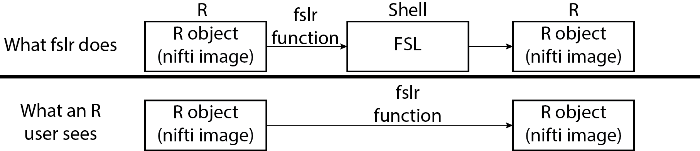
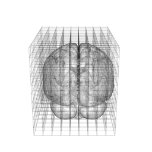
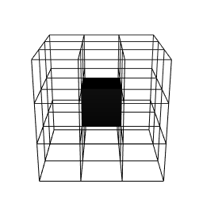
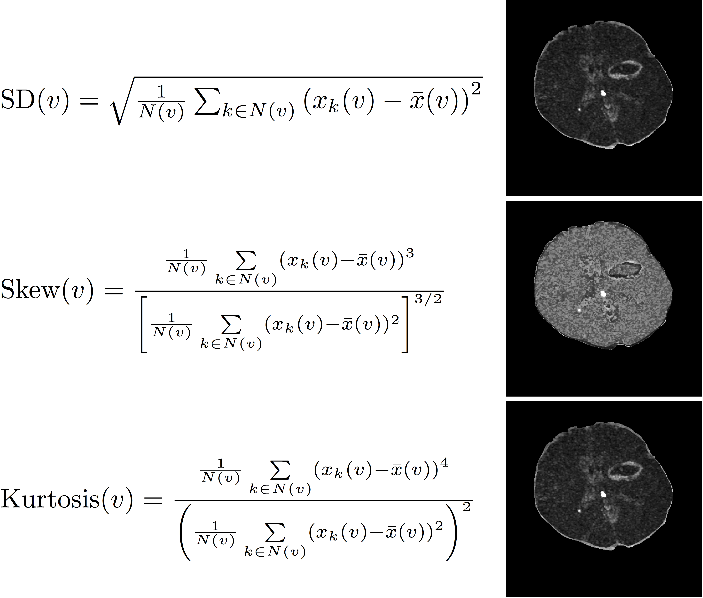
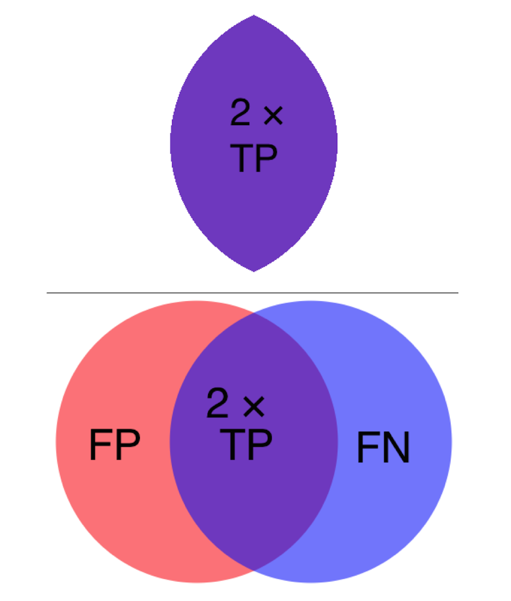
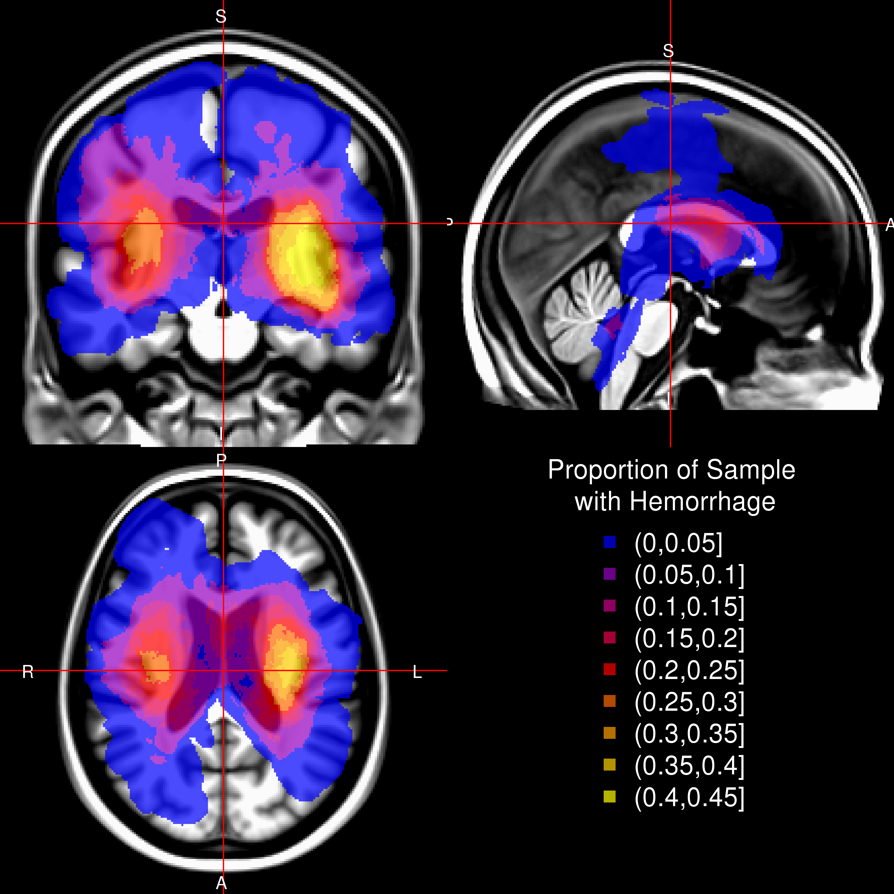

- When a blood vessel ruptures into:
- Tissue ⇒ intracerebral hemorrhage (ICH)
- Ventricles ⇒ intraventricular hemorrhage (IVH)
- ≈ 13% of strokes

http://www.heartandstroke.com/site/c.ikIQLcMWJtE/b.3484153/k.7675/Stroke__Hemorrhagic_stroke.htm
December 14, 2015
http://www.heartandstroke.com/site/c.ikIQLcMWJtE/b.3484153/k.7675/Stroke__Hemorrhagic_stroke.htm
(Muschelli, John, et al. "fslr: Connecting the FSL Software with R." R JOURNAL 7.1 (2015): 163-175.)
(Muschelli, John, Elizabeth Sweeney, and Ciprian Crainiceanu. "brainR: Interactive 3 and 4D Images of High Resolution Neuroimage Data." R JOURNAL 6.1 (2014): 42-48.)

Want to go from this 

Intracerebral (bleeds mainly in tissue, ICH) or Intraventricular (bleeds into ventricles, IVH) Hemorrhage trials
Minimally Invasive Surgery plus rt-PA for ICH Evacuation (MISTIE)
Multi-center, multi-national Phase II clinical trial



Muschelli, John, Elizabeth Sweeney, and Ciprian Crainiceanu. "brainR: Interactive 3 and 4D Images of High Resolution Neuroimage Data." R JOURNAL 6.1 (2014): 42-48.
Standard HU Ranges:

| CT | MRI | |
|---|---|---|
| Domain | Diagnostic | Diagnostic/Research |
| Units | Houndsfield Units | Arbitrary |
| Template | One exists | MNI Standard |
| Measures | Measures humans/rooms/beds | Measures Humans |
| Methods | Sparse | Many |

Muschelli, John, et al. "Validated automatic brain extraction of head CT images." NeuroImage 114 (2015): 379-385. R Code to Run It!



For each voxel, neighborhood \(N(v)\), of all adjacent neighboring voxels in \(3\) dimensions. Let \(x_k(v)\) denote the voxel intensity in HU for voxel neighbor \(k\), where \(k = 1, \dots, 27\). \[
\begin{equation}
\bar{x}(v) = \frac{1}{N(v)} \sum_{k \in N(v)} x_k(v) \label{eq:mean}
\end{equation}
\] 

From \(32\) CT images from Dr. Rorden (personal communication), we created a voxel-wise mean image \(M\) and voxel-wise standard deviation \(S\) image, after registering to a CT template (Rorden, Bonilha, Fridriksson, et al., 2012).


Let \(y_{i}(v)\) be the presence / absence of ICH for voxel \(v\) from person \(i\).
General model form: \[ \text{logit}\left(y_{i}(v)\right) = f(X) \]

For each validation scan we can calculate the following 2-by-2 table, where the cells represent number of voxels and a corresponding Venn diagram:
| Manual | |||
| 0 | 1 | ||
| PitCH | 0 | TN | FN |
| 1 | FP | TP | |

We calculate the Dice Similarity Index (DSI): \[ \definecolor{red}{RGB}{255,0,0} \definecolor{blue}{RGB}{0,0,255} \definecolor{purple}{RGB}{128,0,128} \definecolor{blac,}{RGB}{0,0,0} \frac{ \color{purple} 2 \times \# \text{TP} }{ \color{purple} 2 \times \#\text{TP} \color{black} + \color{red} \text{FN} \color{black} + \color{blue} \text{FP}} \]




| Overall | |
|---|---|
| Age in Years: Mean (SD) | 60.7 (11.2) |
| Male: N (%) | 77 (68.8%) |
| Diagnostic ICH Volume in mL: Mean (SD) | 37.7 (20.2) |
| Diagnostic IVH Volume in mL: Mean (SD) | 3.2 (6.3) |
Smoothing the original image using large Gaussian kernels (\(\sigma = 5mm^3,10mm^3, 20mm^3\)) can capture any potential homogeneity throughout the scan.

J. P. Broderick, T. G. Brott, J. E. Duldner, et al. "Volume of intracerebral hemorrhage. A powerful and easy-to-use predictor of 30-day mortality." In: Stroke 24.7 (1993), pp. 987-993.
S. Davis, J. Broderick, M. Hennerici, et al. "Hematoma growth is a determinant of mortality and poor outcome after intracerebral hemorrhage". In: Neurology 66.8 (2006), pp. 1175-1181.
L. C. Jordan, J. T. Kleinman and A. E. Hillis. "Intracerebral hemorrhage volume predicts poor neurologic outcome in children". In: Stroke 40.5 (2009), pp. 1666-1671.
S. Tuhrim, D. R. Horowitz, M. Sacher, et al. "Volume of ventricular blood is an important determinant of outcome in supratentorial intracerebral hemorrhage". In: Critical care medicine 27.3 (1999), pp. 617-621.